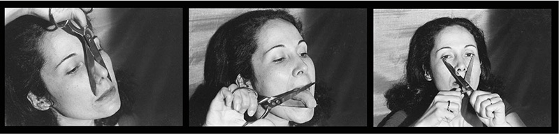
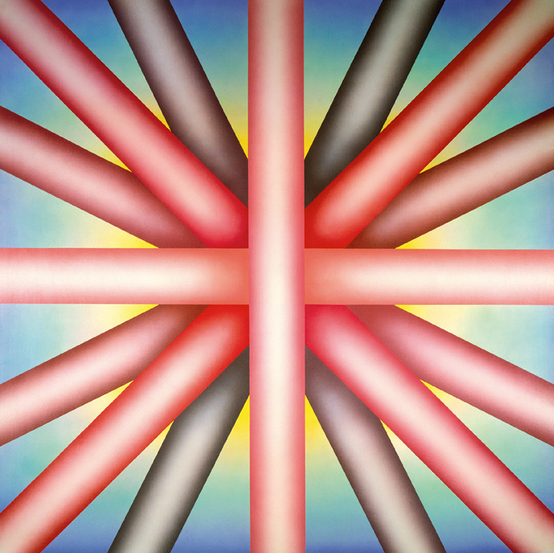
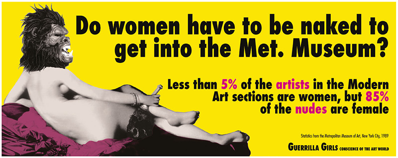
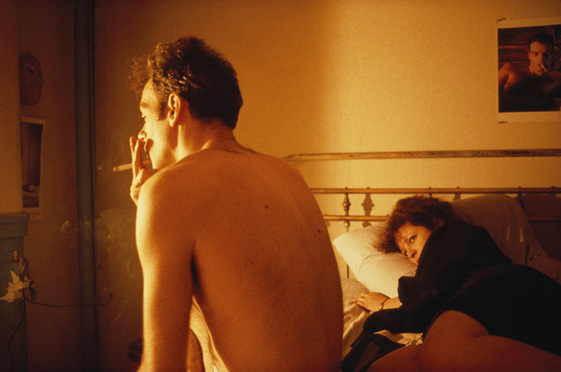
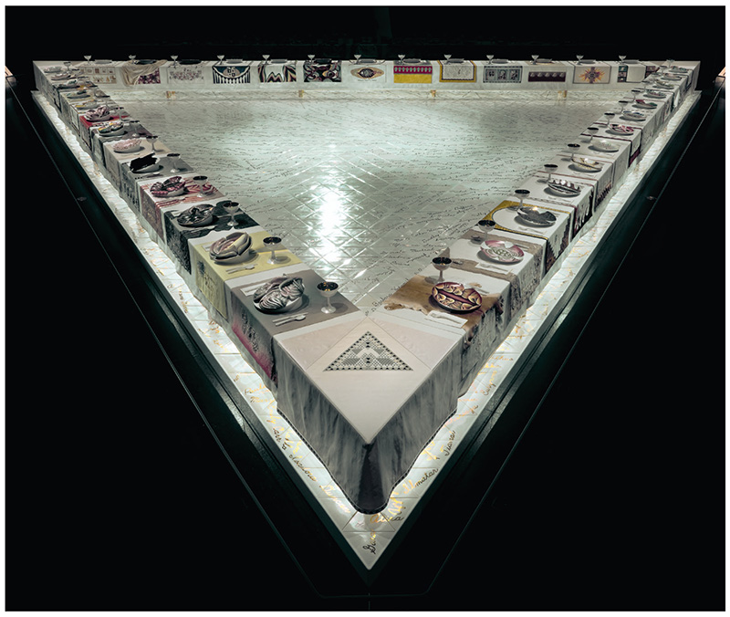
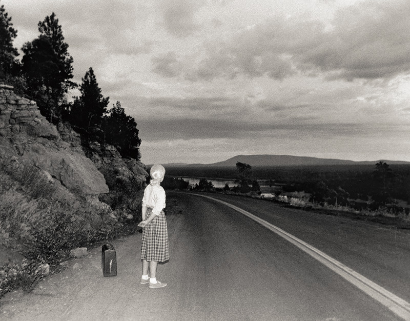
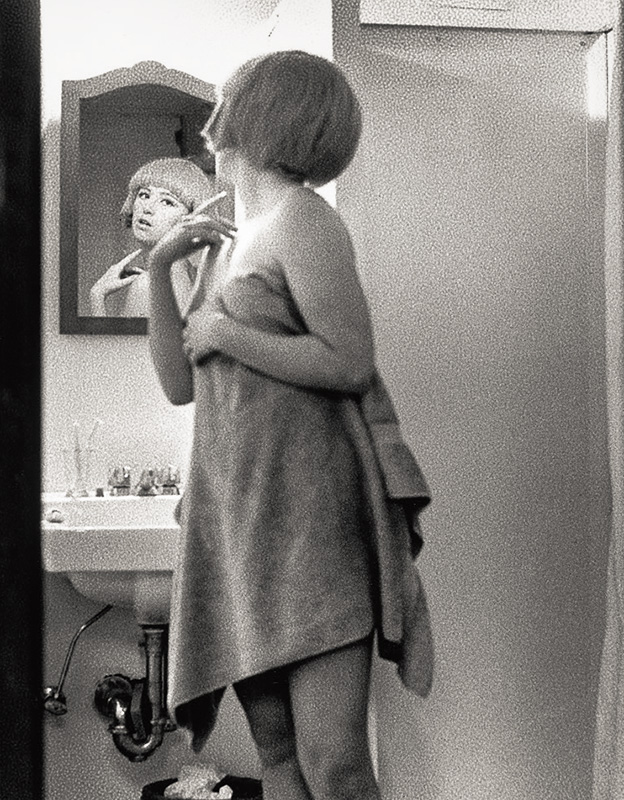
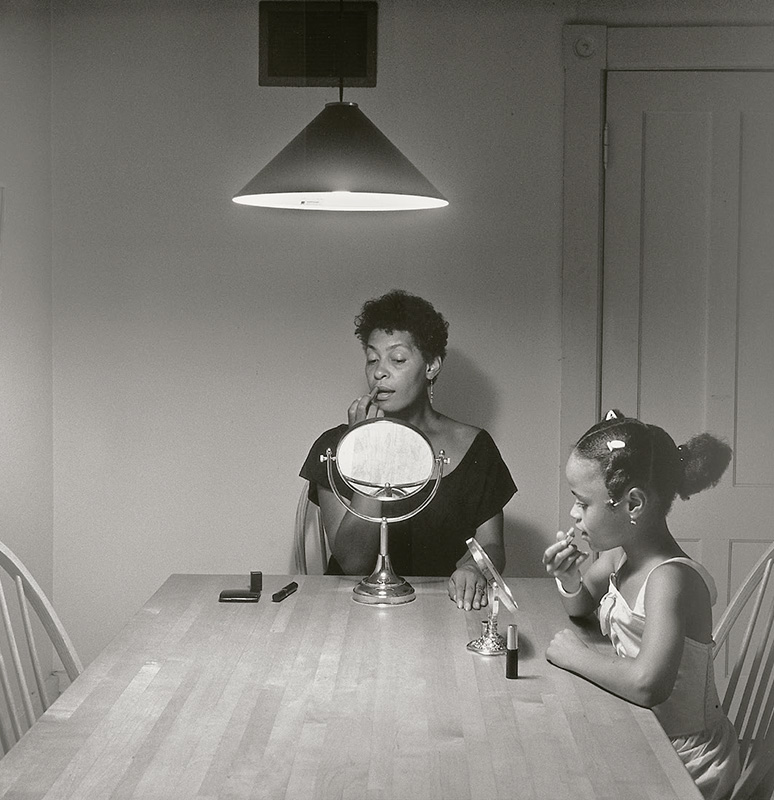
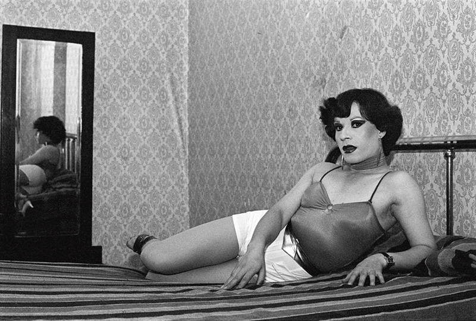
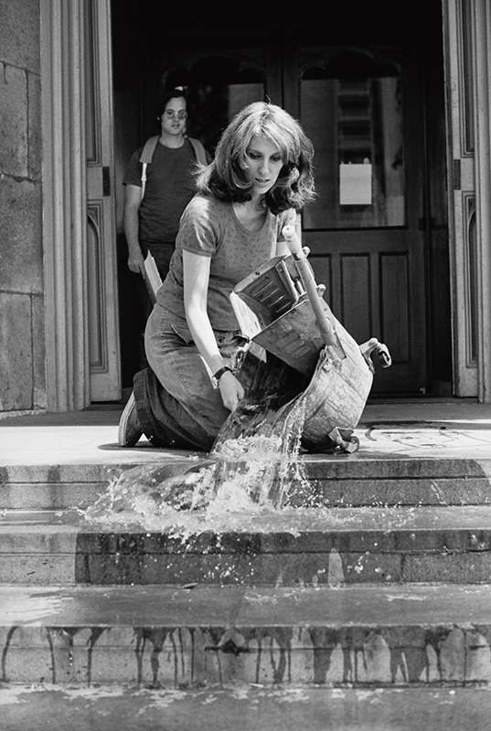

Anna Maria Maiolino
Corpo, performance e fotografia como vestígio.
Aula 2 · Bloco inicial condensado
Anna Maria Maiolino · Judy Chicago · Guerrilla Girls · Nan Goldin
Hipótese
A aula coloca em relação corpo, colaboração, pedagogia, anonimato, arquivo e exposição. A autoria não se dissolve ao reconhecermos suas mediações. Ela se torna mais precisa quando distinguimos gesto de artista, trabalho coletivo, condições institucionais e formas de circulação pública.
Mapa da aula
| Artista ou coletivo | Regime | Operação central | Problema crítico |
|---|---|---|---|
| Anna Maria Maiolino | Corpo como meio e vestígio. | Produzir sob censura sem objeto estável. | Como registrar o que buscava não deixar prova? |
| Judy Chicago | Autoria coletiva e genealogia. | Construir um “lugar à mesa” para histórias apagadas. | Quem fica dentro da genealogia celebrada? |
| Guerrilla Girls | Persona coletiva anônima. | Converter estatística em acusação pública. | Como criticar museus com seus próprios índices de visibilidade? |
| Nan Goldin | Arquivo afetivo e comunidade. | Tornar íntima uma história pública de precariedade. | Quando intimidade documentada deixa de ser apropriação? |
Campo feminista em disputa
Hessel situa as práticas dos anos 1970 em redes de ativismo, cursos, galerias, coletivos e instituições construídas pelas próprias artistas. Corpo, têxtil, performance, texto e fotografia não formam uma linguagem homogênea, mas disputam o que pode ser reconhecido como arte, trabalho e autoria.
Obras em foco

Corpo, performance e fotografia como vestígio.

O paraíso é apenas para homens brancos (1973)

As mulheres precisam estar nuas para entrar no Met. Museum? (1989)

Nan e Brian na cama, Nova York (1983), de The Ballad of Sexual Dependency.
Hessel não reúne essas práticas por uma forma comum. A comparação pergunta como cada uma reconfigura a autoria: Maiolino faz da fotografia um resto de ação; Chicago torna nomeação, trabalho e pedagogia estruturais; Guerrilla Girls usam dados e anonimato para acusar desigualdades; Goldin transforma proximidade e circulação em arquivo de uma comunidade.
Quando performance se torna fotografia, a imagem não dá acesso imediato ao acontecimento. Ela é vestígio selecionado, editado e posto em circulação. Corpo, censura, duração e registro precisam ser lidos juntos.
The Dinner Party desloca a forma, o trabalho decorativo e a genealogia para o centro do museu. A obra exige perguntar quem produz, quem assina, quais trabalhos são valorizados e como um monumento feminista pode continuar ambivalente.
O arquivo íntimo constrói comunidade e memória, mas envolve edição, exposição, consentimento, vulnerabilidade e instituição. A fotografia não é apenas prova: organiza um regime de relação.
Anna Maria Maiolino
| Leitura insuficiente | O que a obra exige |
|---|---|
| Corpo como confissão privada. | Corpo como campo de censura, linguagem e sobrevivência. |
| Fotografia como documentação neutra. | Fotografia como vestígio que reorganiza acesso e memória. |
| Ausência de objeto como desmaterialização abstrata. | Economia concreta de materiais, risco e prova sob regime autoritário. |
| Artista isolada. | Prática situada entre migração, ditadura, circulação e instituição. |
Hessel observa que, sob censura, Maiolino usa o corpo porque ele não deixa “vestígios nem provas” como um objeto material. A fotografia de É o que sobra não elimina esse problema: torna-o visível como resto, enquadramento e circulação posterior.
Judy Chicago
Hessel relaciona Chicago à criação de programas de arte feminista e à construção de práticas a partir das experiências das estudantes. Ensinar aparece como produção de condições materiais, discursivas e institucionais para a autoria, não como atividade externa ao ateliê.
Em The Dinner Party (1974-1979), a instalação triangular, deliberadamente não hierárquica, reúne 39 lugares para figuras da história e da mitologia ocidentais e depende do trabalho coletivo de mais de cem mulheres. A escala monumental torna cerâmica e bordado, técnicas rebaixadas como “decorativas”, parte da própria disputa de valor.
Assistir a Right Out of History: The Making of Judy Chicago’s Dinner Party, parte 2 ↗
1980. Direção: Johanna Demetrakas.
Obra em foco

Judy Chicago, 1974-1979.
Cerâmica, porcelana e têxtil. Brooklyn Museum. Imagem e informações conforme a edição brasileira de Katy Hessel.
A forma triangular não deve ser tomada apenas como emblema. Ela organiza lugares, nomes, técnicas e trabalho compartilhado, fazendo da instalação uma proposição sobre quem pode ocupar uma genealogia pública.
O vídeo acompanha o processo de realização da obra e pode ajudar a observar a escala da fabricação, as pessoas envolvidas e as tensões entre autoria singular, trabalho distribuído e institucionalização.
Trabalho e infraestrutura de valor
| Hierarquia herdada | Operação de Chicago |
|---|---|
| Pintura e escultura como “grandes” meios. | Bordado e cerâmica em escala monumental. |
| Trabalho manual como detalhe secundário. | Trabalho coletivo como condição material da obra. |
| História da arte como lista de indivíduos. | Genealogia de artistas, escritoras, ativistas e figuras míticas. |
| Autoria singular. | Liderança autoral que depende de trabalho distribuído. |
Guerrilla Girls
O cartaz As mulheres precisam estar nuas para entrar no Met. Museum? (1989) reúne estatística, imagem, humor, máscara e circulação urbana. Hessel registra que as Guerrilla Girls apontavam menos de 5% de artistas mulheres nas seções de Arte Moderna do Met, diante de 85% de nus femininos.
O dado não basta por si só. A pergunta transforma uma assimetria numérica em problema de olhar, desejo e valor: quais relações tornam os corpos femininos hipervisíveis, mas restringem a presença de artistas mulheres?
Anonimato estratégico
| Autor individual | Persona coletiva das Guerrilla Girls |
|---|---|
| Assinatura estabiliza reputação e mercado. | Máscara suspende identidade civil e cria uma voz repetível. |
| Obra circula no circuito legitimado. | Cartaz ocupa ruas próximas aos museus, “porque eram livres”. |
| Estatística permanece relatório. | Estatística torna-se imagem, humor e constrangimento público. |
| Instituição seleciona artistas. | Instituição passa a ser objeto de leitura e acusação. |
Nan Goldin
Hessel escreve que Goldin via a câmera como “uma extensão da minha mão”. Em The Ballad of Sexual Dependency (1979-1995), centenas de fotografias e uma trilha sonora constituem uma sequência, não um conjunto neutro de documentos. O arquivo produz narrativa, repetição de relações e memória de uma família escolhida.
Hessel situa a série diante de violência doméstica, desejo, dependência, comunidades gay e trans e crise do HIV. As imagens tiveram dificuldade de entrar no circuito de museus até a metade dos anos 1980. A circulação posterior amplia a presença dessas vidas e, ao mesmo tempo, reabre problemas de consentimento, dor e exposição.
| Arquivo normativo | The Ballad of Sexual Dependency, segundo Hessel |
|---|---|
| Registro de vidas legitimadas. | Família escolhida, comunidades gay e trans, HIV, violência, desejo e dependência. |
| Distância documental. | Proximidade afetiva e participação em uma cena. |
| Imagem isolada e classificável. | Sequência narrativa, música e repetição de relações. |
| Neutralidade do olhar. | Posição implicada, declaradamente “sem glamour, sem glorificação”. |
Cindy Sherman
Hessel situa Sherman na Pictures Generation, grupo que utilizou fotografia para investigar representação, autoria e originalidade. Em Untitled Film Stills, a artista encena personagens reconhecíveis, mas sem filme, nome ou biografia que estabilize o que vemos.
As setenta fotografias em preto e branco evocam situações narrativamente carregadas do cinema das décadas de 1950 e 1960. A figura parece familiar porque reconhecemos os códigos que a tornam legível: a secretária, a dona de casa, a jovem recém-chegada à cidade, a mulher em perigo, a pin-up.

Cindy Sherman, 1979.
Impressão em gelatina de prata, da série Untitled Film Stills. Imagem e informações conforme Katy Hessel e Charlotte Cotton.

Cindy Sherman, 1977.
Impressão em gelatina de prata, da série Untitled Film Stills. Imagem e informações conforme Katy Hessel.
Sherman e Goldin
| Cindy Sherman | Nan Goldin |
|---|---|
| Encena personagens construídas a partir de convenções do cinema, da moda e da publicidade. | Constrói uma sequência de relações vividas em uma família escolhida e em sua comunidade. |
| É fotógrafa, modelo e personagem, fazendo coincidir observação e encenação. | Fotografa de uma posição implicada, na qual intimidade, dor e circulação permanecem inseparáveis. |
| Expõe como a figura feminina se torna legível por códigos culturais anteriores à imagem. | Produz arquivo afetivo em que memória e exposição pública entram em tensão. |
| Pergunta: quem representa, para quem e por quais convenções de feminilidade? | Pergunta: como dar presença a uma comunidade sem neutralizar as relações que a imagem expõe? |
Cotton lê Untitled Film Stills como formulação decisiva da fotografia pós-moderna: a série torna a feminilidade uma construção de códigos culturais e pergunta quem é representada, por quem e para quem.
Constelação visual de apoio
Estas obras não abrem um novo bloco temático. Elas tornam mais precisas as relações entre fotografia, comunidade, manutenção e instituição que as quatro artistas centrais já colocam em movimento.

Sem título (Mulher e filha com maquiagem), da série Mesa de cozinha, 1990.
Hessel situa a série como uma mudança decisiva na presença de momentos cotidianos de mulheres negras na arte. A mesa organiza intimidade, família, representação e história pública.

Evelyn, La Palmera, Santiago, Chile, 1981.
Em La manzana de Adán, produzida junto a comunidades de prostitutas transgênero e travestis sob a ditadura Pinochet, a fotografia torna a relação com quem é retratada inseparável de resistência e vulnerabilidade.

Lavagem/Rastros/Manutenção: Lado de fora, 1973.
A documentação fotográfica da artista limpando os degraus do Wadsworth Atheneum faz do trabalho de manutenção uma crítica às hierarquias patriarcais e museológicas.
Fotografia: da “prova” ao regime de relação
| Anna Maria Maiolino | Nan Goldin | Constelação de apoio |
|---|---|---|
| Fotografia como resto de uma ação que buscava não deixar prova. | Fotografia como prática contínua de presença e memória. | Fotografia como cotidiano representado, resistência implicada e documento de manutenção. |
| Corpo sob censura. | Corpo e comunidade sob exposição pública. | Representação racial, dissidência de gênero e trabalho invisibilizado. |
| Documento problemático. | Arquivo afetivo problemático. | Imagem como posição, vínculo e disputa institucional. |